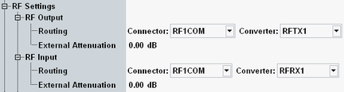
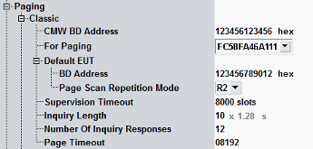
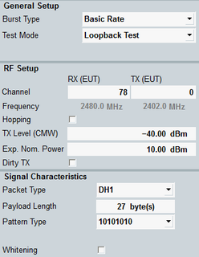

An established connection to the EUT is a prerequisite for all signaling tests, including the combined signal path measurement described in this application sheet.
To set up a connection:
Preset your R&S CMW to ensure a definite instrument state.
Connect your EUT to the RF 1 COM connector.
Open the "Bluetooth Signaling" application, e.g. from the task bar (press "TASKS" to open the task bar).
If the application is not present in the task bar, enable it in the "Generator/Signaling Controller" dialog (press "SIGNAL GEN" to open the dialog).
Press the "Config" hotkey to open the configuration dialog.
In section "RF Settings", select a bidirectional RF connector for input and output. This example uses RF 1 COM.
If necessary, also adjust the "External Attenuation" settings.

For a connection to the default device, set its BD address and the page scan repetition mode in section "Connection" > "Paging" > "Default EUT".

Close the configuration dialog.
In the main view of the signaling application, adjust the "General Setup", "RF Setup" and "Signal Characteristics" settings to the capabilities of your EUT.

To reach standby status of the R&S CMW, press [ON | OFF] key.
Enable Bluetooth at the EUT.
- For a connection to the default device, continue at step 13.
- Otherwise ensure that the EUT is discoverable by enabling inquiry scan mode. Then press the "Inquire" button. Wait until the EUT's BD address is displayed in the "BD Address" dialog that pops up on the screen.
Wait for the inquiry process to finish or press "Stop Inquiry" at any time to return to the standby state.
Select the desired device "For Paging". If the R&S CMW has not discovered any EUT, only the default device is available for selection.
Press the "Connect"or "Connect Test Mode" hotkey to set up a connection.
Note the connection states displayed in the main view and wait until the EUT state indicates "Connected".

After the EUT has connected, the main view provides EUT information.
Checks for failed connection If the connection fails, check the following R&S CMW settings:
|